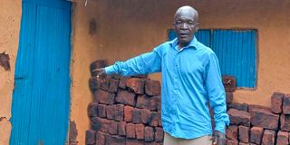

Gallery


The Shakahola tragedy shook the nation when a series of deaths linked to a dangerous cult were uncovered. This section provides an introduction to the events that unfolded.
Explore the key events that led to the tragedy.
Hear the harrowing testimonies of survivors.
The tragedy has sparked debates about religious extremism and government intervention.
The Shakahola tragedy serves as a reminder of the dangers of manipulation. Justice and accountability remain critical as investigations continue.